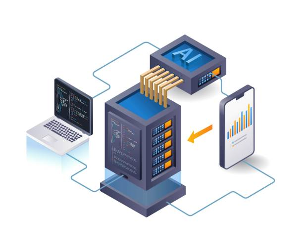
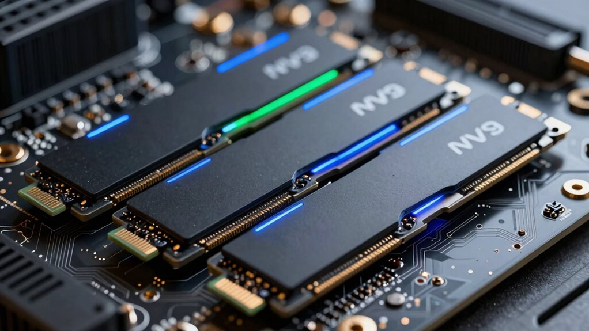
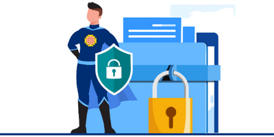
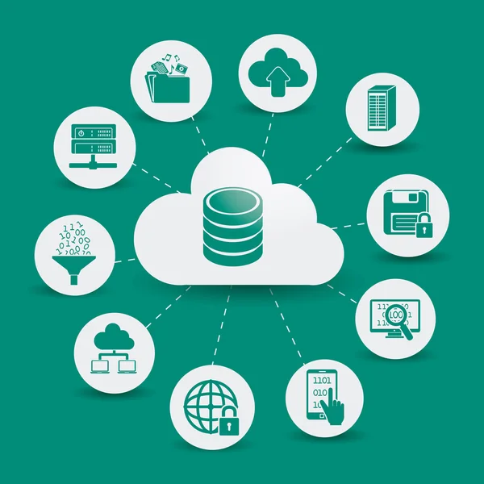

Otridante Hospedagens
Aqui temos as melhores hospedagens do Brasil
Encontre serviços de hospedagem para diferentes tipos de projetos, com recursos como armazenamento,
largura de banda, certificados SSL, bancos de dados, contas de e-mail e suporte técnico. Compare os
planos e escolha a hospedagem que melhor atende às necessidades do seu site.
Temos qualidade em nosso serviço
Nossa hospedagem utiliza uma infraestrutura moderna e otimizada para oferecer alto desempenho, segurança
e estabilidade para seus projetos. Trabalhamos com servidores de alta performance, armazenamento SSD NVMe,
conexão de alta velocidade e suporte a tecnologias como PHP, MySQL, Node.js e certificados SSL. Nossos planos
também contam com recursos como backups automáticos, proteção contra ataques, monitoramento de servidores
e sistemas de cache para melhorar o tempo de carregamento das páginas. Tudo isso para manter seu site rápido,
seguro e disponível 24 horas por dia.
O que nós oferecemos
Servidores de Alta Performance
Servidores modernos preparados para oferecer velocidade, estabilidade e disponibilidade para seus sites.

SSD NVMe
Armazenamento SSD NVMe de alta velocidade para carregamentos mais rápidos e melhor desempenho.

SSL e segurança
Certificado SSL e recursos de segurança para proteger os dados e garantir uma conexão segura.

Banco de Dados
Suporte a bancos de dados MySQL para armazenar e gerenciar as informações dos seus projetos.

Planos
Plano1
R$ 00/mês
Contratar- 1 site
- 10 GB de armazenamento SSD NVMe
- 100 GB de tráfego mensal
- Certificado gratuito
- 1 banco de dados MySQL
- 1 conta de e-mail
- backup semanal
- Suporte padrão
Ideal para: sites pessoais, portfólios e pequenos projetos
Plano2
R$ 00/mês
Contratar- Até 5 sites
- 30 GB de armazenamento SSD NVMe
- Trafégo ilimitado
- Certificado gratuito
- 10 banco de dados MySQL
- 10 contas de e-mail
- backup diário
- CDN
- Suporte prioritário
Ideal para: sites profissionais, blogs, lojas pequenas e projetos em crescimento
Plano3
R$ 00/mês
Contratar- Até 20 sites
- 100 GB de armazenamento SSD NVMe
- Trafégo ilimitado
- Certificado gratuito
- Banco de dados MySQL ilimitados
- 50 contas de e-mail
- backup diário automático
- CDN de alta performance
- Proteção contraa ataques
- Monitoramento 24/7
- Suporte prioritário
Ideal para: empresaas, lojas e projetos de grande porte
Tudo sob seu controle
Gerencie sua hospedagem de forma simples através de um painel de controle completo. Crie e gerencie contas de e-mail,
bancos de dados, domínios, arquivos e configurações do seu site em um único lugar. O painel foi desenvolvido para facilitar
tanto tarefas básicas quanto configurações mais avançadas, permitindo que você tenha controle sobre seu ambiente de
hospedagem sem precisar lidar diretamente com a infraestrutura do servidor.
Segurança em primeiro lugar
Seus dados ficam protegidos por uma infraestrutura desenvolvida para oferecer segurança, estabilidade e disponibilidade.
Utilizamos certificados SSL/TLS, que criptografam a comunicação entre o visitante e o servidor, ajudando a impedir que
informações sejam interceptadas. Nossa infraestrutura também conta com firewall e sistemas de monitoramento, responsáveis
por identificar e bloquear atividades suspeitas e possíveis tentativas de acesso não autorizado. Para evitar a perda de informações,
realizamos backups automáticos e periódicos dos dados armazenados. Assim, em caso de falhas ou problemas inesperados,
seus arquivos podem ser recuperados. Além disso, nossos servidores são monitorados continuamente e contam com recursos de
proteção contra ataques, garantindo que seus sites permaneçam seguros, estáveis e disponíveis 24 horas por dia.
Segurança
Utilizamos SSL/TLS, firewall, monitoramento contínuo e backups automáticos para proteger seus dados contra acessos não autorizados e possíveis perdas.
Suporte
Nossa equipe está disponível para auxiliar na configuração, manutenção e resolução de problemas relacionados à sua hospedagem. Fale conosco em: (xx) xxxx-xxxx ou no suporte da plataforma
Alta performance
Servidores equipados com armazenamento SSD NVMe, sistemas de cache e infraestrutura otimizada para oferecer carregamentos rápidos e maior estabilidade.
Seu site sempre online
Monitoramos nossa infraestrutura 24 horas por dia para identificar falhas rapidamente e manter seus sites disponíveis e funcionando de forma estável.